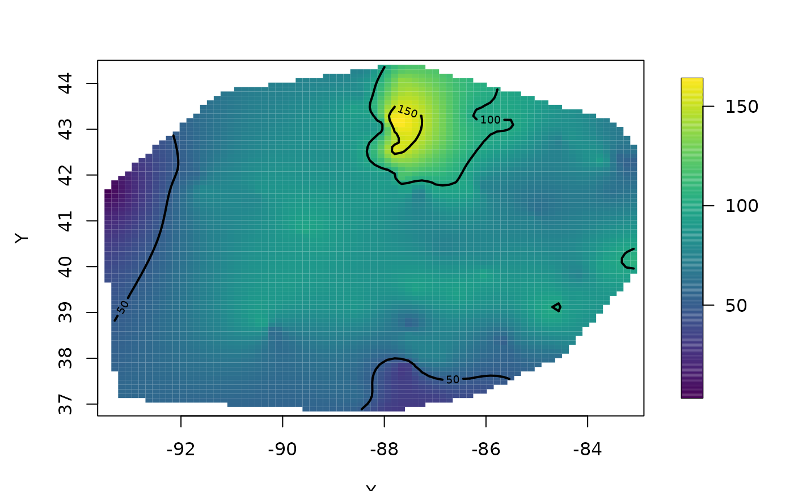
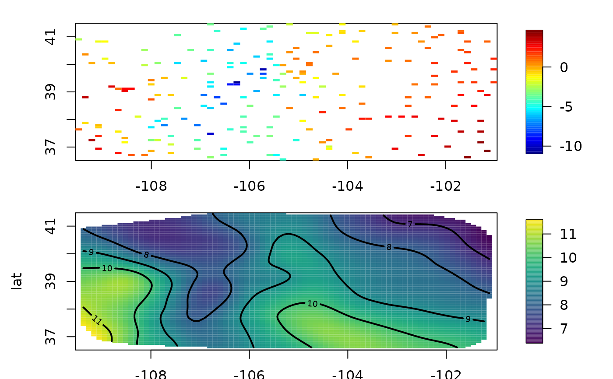
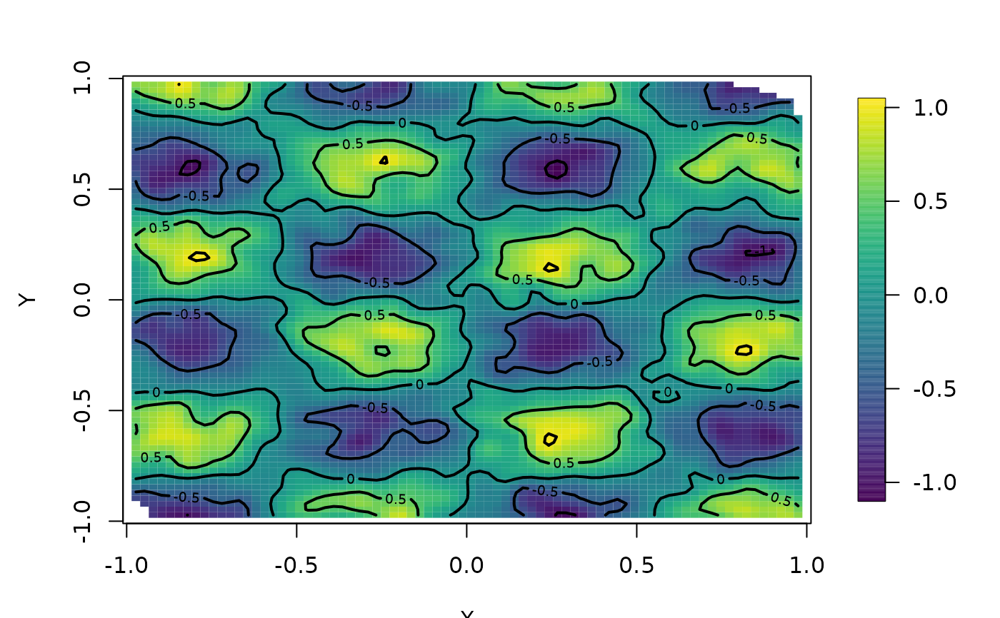

mKrig.RdThis is a simple version of the Krig function that is optimized for large data sets, sparse linear algebra, and a clear exposition of the computations. Lambda, the smoothing parameter must be fixed. This function is called higher level functions for maximum likelihood estimates of covariance paramters.
mKrig(x, y, weights = rep(1, nrow(x)), Z = NULL,
cov.function = "stationary.cov", cov.args = NULL,
lambda = NA, m = 2, chol.args = NULL, find.trA = TRUE,
NtrA = 20, iseed = NA, na.rm = FALSE,
collapseFixedEffect = TRUE, tau = NA, sigma2 = NA,
...)
# S3 method for mKrig
predict( object, xnew=NULL,ynew=NULL, grid.list = NULL,
derivative=0,
Z=NULL,drop.Z=FALSE,just.fixed=FALSE,
collapseFixedEffect = object$collapseFixedEffect, ...)
# S3 method for mKrig
summary(object, ...)
# S3 method for mKrig
print( x, digits=4,... )
# S3 method for mKrigSummary
print( x, digits=4,... )
mKrig.coef(object, y, collapseFixedEffect=TRUE)
mKrig.trace( object, iseed, NtrA)
mKrigCheckXY(x, y, weights, Z, na.rm)If replicated fields are given to mKrig (i.e.
y has more than one column) there is the choice of estimating the
fixed effect coefficients (d in the returned object) separately
for each replicate or pooling across replicates and deriving a single
estimate. If collapseFixedEffect is TRUE (default) the estimates are
pooled.
A list of optional arguments (pivot, nnzR) that will be used with the call to the cholesky decomposition. Pivoting is done by default to make use of sparse matrices when they are generated. This argument is useful in some cases for sparse covariance functions to reset the memory parameter nnzR. (See example below.)
A list of optional arguments that will be used in calls to the covariance function.
The name, a text string of the covariance function.
If zero the surface will be evaluated. If not zero the matrix of partial derivatives will be computed.
Number of significant digits used in printed output.
If true the fixed part will only be evaluated at the polynomial part of the fixed model. The contribution from the other covariates will be omitted.
If TRUE will estimate the effective degrees of freedom using a simple Monte Carlo method. This will add to the computational burden by approximately NtrA solutions of the linear system but the cholesky decomposition is reused.
A grid.list to evaluate the surface in place of specifying arbitrary locations.
Random seed ( using set.seed(iseed)) used to generate
iid normals for Monte Carlo estimate of the trace. Set this to an integer to insure the same random draws are used to compute the approximate trace and be consistent across different values of the covariance parameters.
If TRUE only the predictions for the fixed part of the model will be evaluted.
Smoothing parameter or equivalently the ratio between the nugget and process varainces.
The degree of the polynomial used in the fixed part. This is follows the thin plate spline convention that the degree is m-1. Default is m=2 for a linear function, m=1 a constant and, as an quick logical switch, m=0 will result in no fixed part in the spatial model.
If TRUE NAs in y are omitted along with corresonding rows of x.
Number of Monte Carlo samples for the trace. But if NtrA is greater than or equal to the number of observations the trace is computed exactly.
Object returned by mKrig. (Same as "x" in the print function.)
Value of the process variance.
Value of the measurment error standard deviation.
Precision ( 1/variance) of each observation
Matrix of unique spatial locations (or in print or surface the returned mKrig object.)
Locations for predictions.
Vector or matrix of observations at spatial locations, missing values are not allowed! Or in mKrig.coef a new vector of observations. If y is a matrix the columns are assumed to be independent replicates of the spatial field. I.e. observation vectors generated from the same covariance and measurment error model but independent from each other.
New observation vector. mKrig will reuse matrix
decompositions and find the new fit to these data.
Linear covariates to be included in fixed part of the
model that are distinct from the default low order
polynomial in x. (NOTE the order of the polynomial
determined by m)
In mKrig and predict additional arguments
that will be passed to the covariance function.
This function is an abridged version of Krig and uses a more direct
computation for the linear algebra that faciliates compactly supported
covariance functions. The m stand for micro
and
done for a fixed lambda parameter and other covariance parameters (e.g. aRange) and for unique spatial locations.
This is also the basic computational element of the top level spatialProcess function for finding MLEs.
See the source code for a commented version that described the computation.
These restrictions simplify the code for reading. Note that also
little checking is done and the spatial locations are not transformed
before the estimation.
Repeated locations To keep the coding simple x must be a set of unique locations. When there are multiple observations at a location -- also known as replicated locations -- one strategy is to use the average spatial value for this location in place of mulitple observations. One can also adjust the weights accordingly for this location if that makes sense. To do this use the function
Krig.replicates.
For example
out<- Krig.replicates( x=x, y=y)and out$xM, out$yM, out$weightsM will be the unique locations with averaged values and the number of observations.
out<- Krig.replicates( x=x, y=y, weights= weights)will also combine the weight vector based on the replications and be returned as out$weightsM.
Multiple fields Because most of the operations are linear
algebra this code has been written to handle multiple data
sets. Specifically, if the spatial model is the same except for
different observed values (the y's), one can pass y as a matrix
and the computations are done efficiently for each set.
The likelihood across all replicates is combined and denoted with FULL at the end. Also note the collapseFixedEffects switch to determine if the regression part is found seperately for each replicate or combined into a single model. Note that
this is not a multivariate spatial model -- just an efficient computation
over several data vectors without explicit looping. A big difference in
the computations is that an exact expression for the trace of the
smoothing matrix is (trace A(lambda)) is computationally expensive and
a Monte Carlo approximation is supplied instead.
Supporting functions
See predictSE.mKrig for prediction standard errors and
sim.mKrig.approx to quantify the uncertainty in the estimated function using conditional
simulation.
predict.mKrig will evaluate the derivatives of the estimated
function if derivatives are supported in the covariance function. For
example the wendland.cov function supports derivatives.
summary.mKrig creates a list of class mKrigSummary along with a table of standard errors for the fixed linear parameters.
print.mKrigSummary prints the mKrigSummary object and adds some more explanation about the model and results
print.mKrig prints a summary for the mKrig object that the combines the summary and print methods.
mKrig.coef finds "beta"" and "c" coefficients representing the
solution using the previous cholesky decomposition but for a new data
vector. This is used in computing the prediction standard error in
predictSE.mKrig and can also be used to evalute the estimate
efficiently at new vectors of observations provided the locations, fixed part, and
the covariance matrix all remain the same .
Sparse covariance functions Sparse matrix methods are handled through overloading the usual linear
algebra functions with sparse versions. But to take advantage of some
additional options in the sparse methods the list argument chol.args
is a device for changing some default values. The most important of
these is nnzR, the number of nonzero elements anticipated in
the Cholesky factorization of the postive definite linear system used
to solve for the basis coefficients. The sparse of this system is
essentially the same as the covariance matrix evalauted at the
observed locations. As an example of resetting nzR to 450000
one would use the following argument for chol.args in mKrig:
chol.args=list(pivot=TRUE,memory=list(nnzR= 450000))
Approximation trace estimate
mKrig.trace This is an internal function called by mKrig
to estimate the effective degrees of freedom. The Kriging surface
estimate at the data locations is a linear function of the data and
can be represented as A(lambda)y. The trace of A is one useful
measure of the effective degrees of freedom used in the surface
representation. In particular this figures into the GCV estimate of
the smoothing parameter. It is computationally intensive to find the
trace explicitly but there is a simple Monte Carlo estimate that is
often very useful. If E is a vector of iid N(0,1) random variables
then the trace of A is the expected value of t(E)AE. Note that AE is
simply predicting a surface at the data location using the synthetic
observation vector E. This is done for NtrA independent N(0,1)
vectors and the mean and standard deviation are reported in the
mKrig summary. Typically as the number of observations is
increased this estimate becomse more accurate. If NtrA is as large as
the number of observations (np) then the algorithm switches to
finding the trace exactly based on applying A to np unit
vectors.
A named array with the values of covariance parameters and log likelihoods.
Coefficients of the polynomial fixed part and if present the covariates (Z).To determine which is which the logical vector ind.drift also part of this object is TRUE for the polynomial part.
Coefficients of the nonparametric part.
Dimension of fixed part.
Dimension of c.coef.
Number of columns of Z covariate matrix (can be zero).
Logical vector that indicates polynomial
coefficients in the d coefficients vector. This is helpful
to distguish between polynomial part and the extra covariates
coefficients associated with Z.
The fixed lambda value
Spatial locations used for fitting.
The same as x
Name of covariance function used.
A list with all the covariance arguments that were specified in the call.
Order of fixed part polynomial.
A list with all the cholesky arguments that were specified in the call.
A copy of the call to mKrig.
Number of nonzero entries in the covariance matrix for the process at the observation locations.
Log determinant of the covariance matrix for the observations having factored out sigma.
GLS covariance for the estimated parameters in the fixed part of the model (d coefficients0.
QR and cholesky matrix decompositions needed to recompute the estimate for new observation vectors.
Usual predictions from fit.
Estimate of effective degrees of freedom. Either the mean of the Monte Carlo sample or the exact value.
If NtrA ids less than np then the individual
members of the Monte Carlo sample and sd(trA.info)/ sqrt(NtrA)
is an estimate of the standard error. If NtrA is greater than or equal
to np then these are the diagonal elements of A(lamdba).
Estimated value of the GCV function.
Monte Carlo sample of GCV functions
Krig, surface.mKrig, Tps, fastTps, predictSurface, predictSE.mKrig, sim.mKrig.approx,
mKrig.grid
#
# Midwest ozone data 'day 16' stripped of missings
data( ozone2)
y<- ozone2$y[16,]
good<- !is.na( y)
y<-y[good]
x<- ozone2$lon.lat[good,]
# nearly interpolate using defaults (Exponential covariance range = 2.0)
# see also mKrigMLEGrid to choose lambda by maxmimum likelihood
out<- mKrig( x,y, aRange = 2.0, lambda=.01)
out.p<- predictSurface( out)
surface( out.p)

#
# NOTE this should be identical to
# Krig( x,y, aRange=2.0, lambda=.01)
##############################################################################
# an example using a "Z" covariate and the Matern family
# again see mKrigMLEGrid to choose parameters by MLE.
data(COmonthlyMet)
yCO<- CO.tmin.MAM.climate
good<- !is.na( yCO)
yCO<-yCO[good]
xCO<- CO.loc[good,]
Z<- CO.elev[good]
out<- mKrig( xCO,yCO, Z=Z, cov.function="stationary.cov", Covariance="Matern",
aRange=4.0, smoothness=1.0, lambda=.1)
set.panel(2,1)
#> plot window will lay out plots in a 2 by 1 matrix
# quilt.plot with elevations
quilt.plot( xCO, predict(out))
# Smooth surface without elevation linear term included
surface( out)

set.panel()
#> plot window will lay out plots in a 1 by 1 matrix
#########################################################################
# here is a series of examples with bigger datasets
# using a compactly supported covariance directly
set.seed( 334)
N<- 1000
x<- matrix( 2*(runif(2*N)-.5),ncol=2)
y<- sin( 1.8*pi*x[,1])*sin( 2.5*pi*x[,2]) + rnorm( 1000)*.1
look2<-mKrig( x,y, cov.function="wendland.cov",k=2, aRange=.2,
lambda=.1)
# take a look at fitted surface
predictSurface(look2)-> out.p
surface( out.p)

# this works because the number of nonzero elements within distance aRange
# are less than the default maximum allocated size of the
# sparse covariance matrix.
# see options() for the default values. The names follow the convention
# spam.arg where arg is the name of the spam component
# e.g. spam.nearestdistnnz
# The following will give a warning for aRange=.9 because
# allocation for the covariance matirx storage is too small.
# Here aRange controls the support of the covariance and so
# indirectly the number of nonzero elements in the sparse matrix
if (FALSE) {
look2<- mKrig( x,y, cov.function="wendland.cov",k=2, aRange=.9, lambda=.1)
}
# The warning resets the memory allocation for the covariance matrix
# according the to values options(spam.nearestdistnnz=c(416052,400))'
# this is inefficient becuase the preliminary pass failed.
# the following call completes the computation in "one pass"
# without a warning and without having to reallocate more memory.
options( spam.nearestdistnnz=c(416052,400))
look2<- mKrig( x,y, cov.function="wendland.cov",k=2,
aRange=.9, lambda=1e-2)
# as a check notice that
# print( look2)
# reports the number of nonzero elements consistent with the specifc allocation
# increase in spam.options
# new data set of 1500 locations
set.seed( 234)
N<- 1500
x<- matrix( 2*(runif(2*N)-.5),ncol=2)
y<- sin( 1.8*pi*x[,1])*sin( 2.5*pi*x[,2]) + rnorm( N)*.01
if (FALSE) {
# the following is an example of where the allocation (for nnzR)
# for the cholesky factor is too small. A warning is issued and
# the allocation is increased by 25
#
look2<- mKrig( x,y,
cov.function="wendland.cov",k=2, aRange=.1, lambda=1e2 )
}
# to avoid the warning
look2<-mKrig( x,y,
cov.function="wendland.cov", k=2, aRange=.1,
lambda=1e2, chol.args=list(pivot=TRUE, memory=list(nnzR= 450000)))
###############################################################################
# fiting multiple data sets
#
#\dontrun{
y1<- sin( 1.8*pi*x[,1])*sin( 2.5*pi*x[,2]) + rnorm( N)*.01
y2<- sin( 1.8*pi*x[,1])*sin( 2.5*pi*x[,2]) + rnorm( N)*.01
Y<- cbind(y1,y2)
look3<- mKrig( x,Y,cov.function="wendland.cov",k=2, aRange=.1,
lambda=1e2 )
# note slight difference in summary because two data sets have been fit.
print( look3)
#> [1] 0.015042946 -0.001902681 -0.026272970
#> Call:
#> mKrig(x = x, y = Y, cov.function = "wendland.cov", lambda = 100,
#> k = 2, aRange = 0.1)
#>
#> Number of Locations: 1500
#> Number of data sets fit: 2
#> Degree of polynomial null space ( base model): 1
#> Total number of parameters in base model 3
#> Estimate Eff. degrees of freedom 17.99
#> Standard Error of Eff. Df 0.5135
#> Smoothing parameter 100
#> Nonzero entries in covariance 18614
#>
#>
#> Summary of fixed effects
#> estimate SE pValue
#> d1 0.015040 0.009545 0.1150
#> d2 -0.001903 0.016670 0.9091
#> d3 -0.026270 0.016320 0.1074
#>
#> Covariance Model: wendland.cov
#> Non-default covariance arguments and their values
#> Argument: k has the value(s):
#> [1] 2
#> Argument: aRange has the value(s):
#> [1] 0.1
#}
if (FALSE) {
##################################################################
# finding a good choice for aRange as a taper
# Suppose the target is a spatial prediction using roughly 50 nearest neighbors
# (tapering covariances is effective for roughly 20 or more in the situation of
# interpolation) see Furrer, Genton and Nychka (2006).
# take a look at a random set of 100 points to get idea of scale
# and saving computation time by not looking at the complete set
# of points
# NOTE: This could also be done directly using the FNN package for finding nearest
# neighbors
set.seed(223)
ind<- sample( 1:N,100)
hold<- rdist( x[ind,], x)
dd<- apply( hold, 1, quantile, p= 50/N )
dguess<- max(dd)
# dguess is now a reasonable guess at finding cutoff distance for
# 50 or so neighbors
# full distance matrix excluding distances greater than dguess
hold2<- nearest.dist( x, x, delta= dguess )
# here is trick to find the number of nonsero rows for a matrix in spam format.
hold3<- diff( hold2@rowpointers)
# min( hold3) = 43 which we declare close enough. This also counts the diagonal
# So there are a minimum of 42 nearest neighbors ( median is 136)
# see table( hold3) for the distribution
# now the following will use no less than 43 - 1 nearest neighbors
# due to the tapering.
mKrig( x,y, cov.function="wendland.cov",k=2, aRange=dguess,
lambda=1e2) -> look2
}
###############################################################################
# use precomputed distance matrix
#
if (FALSE) {
y1<- sin( 1.8*pi*x[,1])*sin( 2.5*pi*x[,2]) + rnorm( N)*.01
y2<- sin( 1.8*pi*x[,1])*sin( 2.5*pi*x[,2]) + rnorm( N)*.01
Y<- cbind(y1,y2)
#precompute distance matrix in compact form
distMat = rdist(x, compact=TRUE)
look3<- mKrig( x,Y,cov.function="stationary.cov", aRange=.1,
lambda=1e2, distMat=distMat )
#precompute distance matrix in standard form
distMat = rdist(x)
look3<- mKrig( x,Y,cov.function="stationary.cov", aRange=.1,
lambda=1e2, distMat=distMat )
}